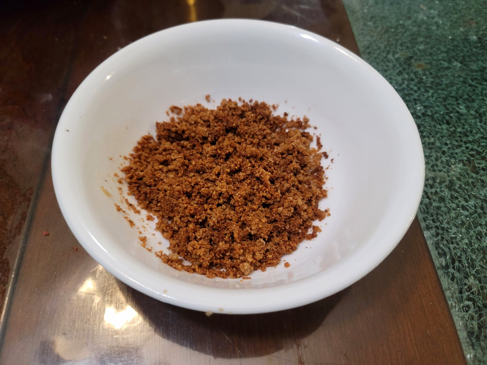

Latik

Ingredients:
- 2 14 oz cans Coconut milk or Coconut cream
Instructions:
- Add the coconut milk to a large saucepan and bring to a simmer over medium heat. Simmer, stirring often, for about 45-65 minutes, or until the fats are separating and it starts to change color.
- Once you notice even a hint of the color changing, reduce the heat to low/medium-low and stir constantly. Make sure to scrape anything stuck to the bottom of the saucepan while stirring. Continue to cook until it becomes a golden brown color and all that remains is the browned coconut curd and coconut oil. Be careful as it burns easily; stop before you may think it is ready.
- Strain the latik from the coconut oil (optionally save the coconut oil as well). Use immediately or store.